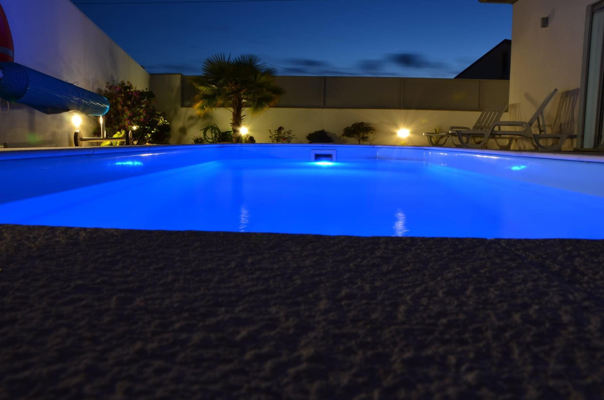
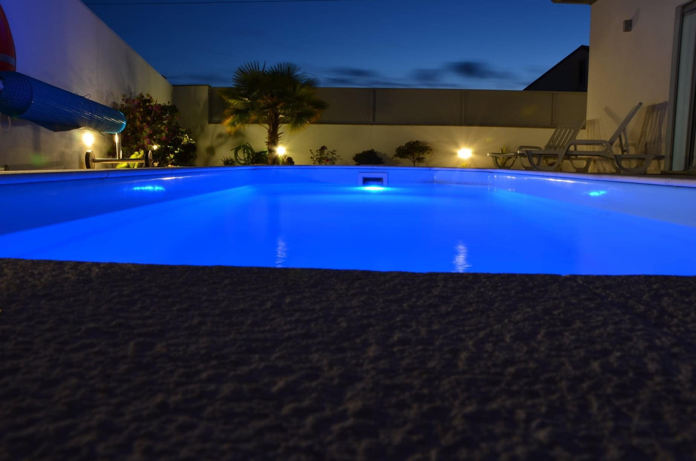
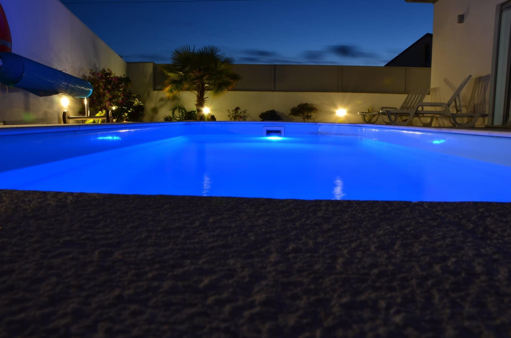
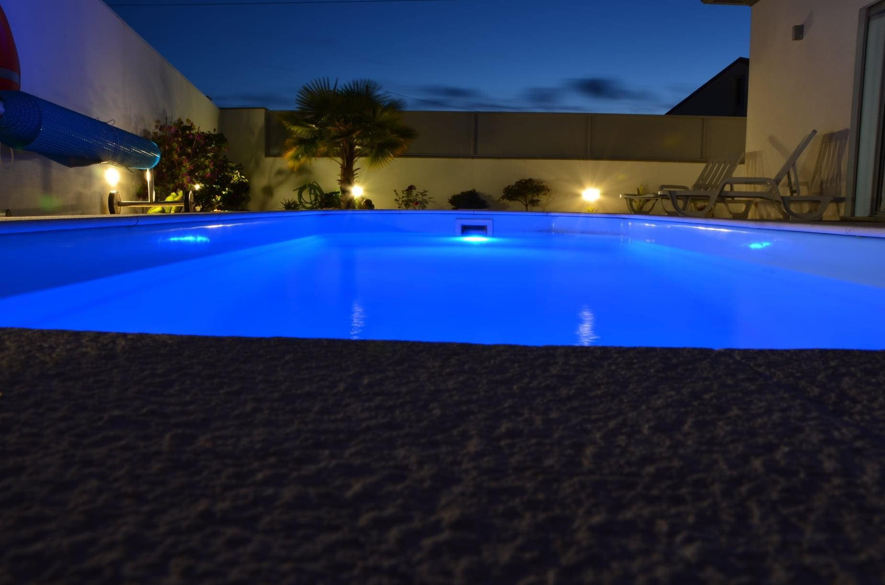

 

Bénéficiant d'un jardin, d'une piscine privée et d'une vue sur le jardin, la Casa Luna est située à Pataias. L'hébergement se trouve à 10 km de nazaré, 27 km de Leiria et 30km de São Martinho do Porto. Vous bénéficierez d'un parking privé sur place et d'une connexion Wi-Fi gratuite. Cette maison de vacances dispose de 2 chambres, d'une salle de bains, de linge de lit, de serviettes, d'une télévision par satellite à écran plat(chaines en français, allemand, portugais), d'un coin repas, d'une cuisine entièrement équipée et d'une terrasse avec vue sur la piscine. Vous pourrez faire du vélo dans les environs.